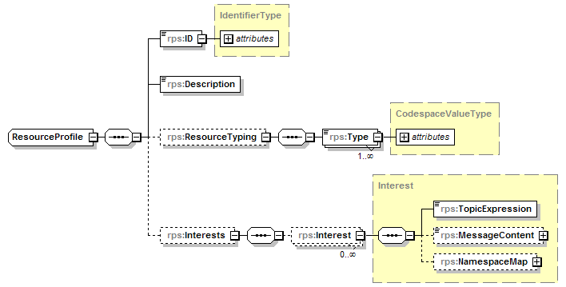

com.saic.uicds.core.infrastructure.endpoint.ResourceProfileServiceEndpoint
com.saic.uicds.core.infrastructure.endpoint.ResourceProfileServiceEndpoint
|
||||||||||
| PREV CLASS NEXT CLASS | FRAMES NO FRAMES | |||||||||
| SUMMARY: NESTED | FIELD | CONSTR | METHOD | DETAIL: FIELD | CONSTR | METHOD | |||||||||
java.lang.Object
@Endpoint @Transactional public class ResourceProfileServiceEndpoint
The UICDS Resource Profile Management Service provides a means to create, discover, and update UICDS Resource Profiles. UICDS resource profiles contain resource typing information and interest expressions for notifications that can be applied to resource instances. The resource profiles generally represent a role that a potential resource instance will fulfill with respect to a particular instantiation of an Interest Group (i.e. incident).
Resource profiles are applied to resource instances to subscribe a resource instance to the interests expressed in the resource profile. Resource profiles can be applied to a resource instance through the Resource Instance Service
A Resorce Profile is defined as the following data structure:

The ID is an identifier that is unique to the core where this profile was created and is meant to be human readable.
The Resource Typing is a set of the following codes defined as a triple of codespace, code, and value. The usage of the triple is meant to be domain independent. Currently, the Resource Profile service supports NIMS resource typing using the codespace value of http://nimsonline.org/2.0 with the following codes:
The values for these codes would come from the NIMS 120 resource typing document.
Resource Profile interests are expressed as topic expressions as defined in the WS-Notification
1.3 specification. See the
NotificationServiceEndpoint for details on
how topic expressions can be formed to express interests in UICDS work products.
ResourceInstanceServiceEndpoint,
NotificationServiceEndpoint| Field Summary |
|---|
| Fields inherited from interface com.saic.uicds.core.infrastructure.util.ServiceNamespaces |
|---|
NS_AgreementService, NS_AlertService, NS_BroadcastService, NS_DirectoryService, NS_IAPService, NS_Incident, NS_IncidentCommandStructureService, NS_IncidentManagementService, NS_InterestGroupService, NS_LEITSCService, NS_LoggingService, NS_MapService, NS_NotificationService, NS_OasisCAP, NS_ProfileService, NS_ResourceInstanceService, NS_ResourceManagementService, NS_ResourceProfileService, NS_SensorService, NS_TaskingService, NS_WorkProductService |
| Constructor Summary | |
|---|---|
ResourceProfileServiceEndpoint()
|
|
| Method Summary | |
|---|---|
org.uicds.resourceProfileService.AddInterestResponseDocument |
addInterest(org.uicds.resourceProfileService.AddInterestRequestDocument requestDoc)
Adds an interest from the profile of the specified entityID (for example johnsmith@core1.saic.com). |
org.uicds.resourceProfileService.CreateProfileResponseDocument |
createProfile(org.uicds.resourceProfileService.CreateProfileRequestDocument requestDoc)
Create a resource profile. |
org.uicds.resourceProfileService.DeleteProfileResponseDocument |
deleteProfile(org.uicds.resourceProfileService.DeleteProfileRequestDocument requestDoc)
Delete a resource profile. |
org.uicds.resourceProfileService.GetProfileResponseDocument |
getProfile(org.uicds.resourceProfileService.GetProfileRequestDocument requestDoc)
Get a resource profile. |
org.uicds.resourceProfileService.GetProfileListResponseDocument |
getProfileList(org.uicds.resourceProfileService.GetProfileListRequestDocument requestDoc)
Get a list of resource profiles. |
org.uicds.resourceProfileService.RemoveInterestResponseDocument |
removeInterest(org.uicds.resourceProfileService.RemoveInterestRequestDocument requestDoc)
Removes an interest from the profile of the specified entityID(for example johnsmith@core1.saic.com). |
void |
setProfileService(com.saic.uicds.core.infrastructure.service.ResourceProfileService p)
|
| Methods inherited from class java.lang.Object |
|---|
clone, equals, finalize, getClass, hashCode, notify, notifyAll, toString, wait, wait, wait |
| Constructor Detail |
|---|
public ResourceProfileServiceEndpoint()
| Method Detail |
|---|
public void setProfileService(com.saic.uicds.core.infrastructure.service.ResourceProfileService p)
@PayloadRoot(namespace="http://uicds.org/ResourceProfileService",
localPart="CreateProfileRequest")
public org.uicds.resourceProfileService.CreateProfileResponseDocument createProfile(org.uicds.resourceProfileService.CreateProfileRequestDocument requestDoc)
CreateProfileRequestDocument -
@PayloadRoot(namespace="http://uicds.org/ResourceProfileService",
localPart="DeleteProfileRequest")
public org.uicds.resourceProfileService.DeleteProfileResponseDocument deleteProfile(org.uicds.resourceProfileService.DeleteProfileRequestDocument requestDoc)
DeleteProfileRequestDocument -
@PayloadRoot(namespace="http://uicds.org/ResourceProfileService",
localPart="GetProfileRequest")
public org.uicds.resourceProfileService.GetProfileResponseDocument getProfile(org.uicds.resourceProfileService.GetProfileRequestDocument requestDoc)
GetProfileRequestDocument -
@PayloadRoot(namespace="http://uicds.org/ResourceProfileService",
localPart="GetProfileListRequest")
public org.uicds.resourceProfileService.GetProfileListResponseDocument getProfileList(org.uicds.resourceProfileService.GetProfileListRequestDocument requestDoc)
GetProfileListRequestDocument -
@PayloadRoot(namespace="http://uicds.org/ResourceProfileService",
localPart="AddInterestRequest")
public org.uicds.resourceProfileService.AddInterestResponseDocument addInterest(org.uicds.resourceProfileService.AddInterestRequestDocument requestDoc)
AddInterestRequestDocument -
@PayloadRoot(namespace="http://uicds.org/ResourceProfileService",
localPart="RemoveInterestRequest")
public org.uicds.resourceProfileService.RemoveInterestResponseDocument removeInterest(org.uicds.resourceProfileService.RemoveInterestRequestDocument requestDoc)
RemoveInterestRequestDocument -
|
||||||||||
| PREV CLASS NEXT CLASS | FRAMES NO FRAMES | |||||||||
| SUMMARY: NESTED | FIELD | CONSTR | METHOD | DETAIL: FIELD | CONSTR | METHOD | |||||||||